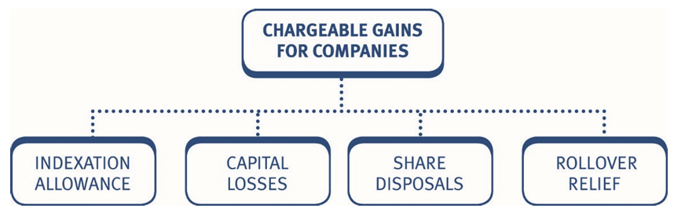

Chapter 21: Chargeable gains for companies
- compute and explain the treatment of chargeable gains .
- explain and compute the indexation allowance available using a given indexation factor.
- explain and compute the treatment of capital losses.
- understand the treatment of disposals of shares by companies and apply the identification rules including the same day and nine day matching rules.
- explain and apply the pooling provisions.
- explain and apply the treatment of bonus issues, rights issues, takeovers and reorganisations.
- explain and apply rollover relief.

1 Chargeable gains for a company
The total net chargeable gains that a company makes during an accounting period (AP) are included in the taxable total profits computation.
It is important to remember that companies pay corporation tax on chargeable gains, not capital gains tax.
1.1 Calculation of total net chargeable gains for a company
The following steps should be completed:
- Calculate the chargeable gain/allowable loss arising on the disposal of each chargeable asset separately.
- Calculate the net chargeable gains arising in the AP = (chargeable gains less allowable losses)
- Deduct capital losses brought forward = total net chargeable gains
- Include in taxable total profits computation.
Note that there is no annual exempt amount available to companies. The total net chargeable gains are therefore simply included in the company’s taxable total profits computation.
Pro forma – companies
| Description | £ |
|---|---|
| Disposal proceeds | X |
| Less: Incidental disposal costs | (X) |
| Net proceeds | X |
| Less: Allowable expenditure (as for individuals) | (X) |
| Unindexed gain | X |
| Less: Indexation allowance (section 2) | (X) |
| Chargeable gain/(allowable loss) | X/(X) |
Note that:
- The calculation of chargeable gains is the same as for individuals except that companies are entitled to an indexation allowance for assets acquired prior to December 2017.
- There are a few other key differences when dealing with the disposal of assets by companies. These include the treatment of capital losses the treatment of shares and securities, and the availability of reliefs.
1.2 Indexation allowance
The indexation allowance (IA) gives a company some allowance for the effect of inflation in calculating a gain.
The rules for the IA are as follows:
- the IA applies to assets purchased prior to December 2017.
- the IA is calculated as: cost of the asset × indexation factor
- the indexation factor is the movement in the retail price index (RPI) from the month of purchase to the month of disposal (or December 2017 if earlier).
- the IA is calculated separately for each item of expenditure (e.g. calculate a different IA for the original acquisition cost and any subsequent enhancement expenditure because they have different purchase dates).
- the IA cannot create or increase a capital loss.
1.2.0.1 Example 1: Indexation Allowances
Pye Ltd bought a factory for £250,000, on 1 April 1998. On 15 August 2001, the company spent £70,000 on an extension to the factory. The factory was sold on 30 September 2025, for £950,000.
Assume the relevant indexation factors are as follows:
| Period | Indexation factor |
|---|---|
| April 1998 to December 2017 | 0.710 |
| August 2001 to December 2017 | 0.598 |
Calculate Pye Ltd’s chargeable gain.
Solution
| £ | |
|---|---|
| Sale proceeds | 950,000 |
| Less: Cost | (250,000) |
| Less: Enhancement expenditure | (70,000) |
| Unindexed gain | 630,000 |
| Less: Indexation allowance | |
| Cost (£250,000 × 0.710) | (177,500) |
| Enhancement expenditure (£70,000 × 0.598) | (41,860) |
| Chargeable gain | 410,640 |
1.2.0.2 Example 2: Indexation Allowances
Hobbit Ltd bought a factory for £175,000 on 1 June 2000. On 15 January 2019, the company spent £62,000 on an extension to the factory. The factory was sold on 31 August 2025, for £680,000.
Assume the indexation factor is as follows:
June 2000 to December 2017: 0.625
Calculate Hobbit Ltd’s chargeable gain.
Solution
2 Capital losses
A capital loss arises if the proceeds received for an asset are lower than the allowable expenditure.
Remember that the indexation allowance cannot create or increase a capital loss.
2.0.0.1 Example 1: Capital loss
JNN Ltd is considering selling a field at auction in July 2025. It acquired the field in August 1992, for £10,000 and the sale proceeds are likely to be one of three figures:
- £25,000
- £12,000
- £8,000
Calculate the chargeable gain or loss under each alternative.
Assume the indexation factor from August 1992 to December 2017 is 1.002.
Solution
2.1 Utilisation of a capital loss
Where allowable losses arise, they are set off against chargeable gains arising in the same accounting period.
Any loss remaining, is carried forward against chargeable gains of future accounting periods, as soon as they arise.
Capital losses cannot be:
- set off against any other income of a company, nor
- carried back against gains in previous accounting periods.
- set off against any other income of a company, nor
2.1.0.1 Example 2: Capital losses
For the year ended 31 March 2026, Jump Ltd has a tax adjusted trading profit of £65,000, and a chargeable gain of £3,600.
At 1 April 2025, it had unused capital losses brought forward of £6,000.
Calculate Jump Ltd’s corporation tax liability** for the year ended 31 March 2026.**
Solution
Corporation tax liability – y/e 31 March 2026
| £ | |
|---|---|
| Tax adjusted trading profit | 65,000 |
| Net chargeable gain (Working) | 0 |
| Taxable total profits | 65,000 |
| £ | |
|---|---|
| Corporation tax (£65,000 × 25%) | 16,250 |
| Less: Marginal relief (250K – 65K) × 3/200 | (2,775) |
| Corporation tax liability | 13,475 |
Working: Net chargeable gain
| £ | |
|---|---|
| Chargeable gain | 3,600 |
| Less: Capital loss brought forward | (6,000) |
| Excess capital loss | (2,400) |
Net chargeable gain in the accounting period is therefore £Nil.
The remaining capital losses cannot be set against the tax adjusted trading profit of the company in the year, they can only be carried forward and set against future chargeable gains.
2.1.0.2 Example 3: Capital losses
For the year ended 31 March 2026, High Ltd has a tax adjusted trading profit of £300,000, and a chargeable gain of £17,000. At 1 April 2025, it had unused capital losses brought forward of £23,000.
Calculate High Ltd’s corporation tax liability for the year ended 31 March 2026.
Solution
4 Takeovers/reorganisations
We have already considered takeovers and reorganisations in relation to an individual taxpayer (Chapter 19). The same principles apply to disposals by companies as summarised below.
Consideration: shares for shares
Where the consideration for the reorganisation or takeover only involves the issue of shares in the acquiring company, the tax consequences are:
- No chargeable gain arises at the time of the reorganisation or takeover.
- The cost of the original shares becomes the cost of the new shares.
- Where the shareholder receives more than one type of share, in exchange
for the original shares:
the cost of the original shares is allocated to the new shares by reference to the market values of the various new shares on the first day of dealing in them after the reorganisation/takeover.
4.0.0.1 Example 1: Takeovers/reorganisations
In June 2002, Major Ltd purchased 2,000 ordinary shares in Blue plc, for £5,000.
In July 2017, Blue plc was taken over by Red plc, and Major Ltd received 2 ordinary shares and 1 preference share in Red plc, for each ordinary share in Blue plc.
Immediately after the takeover, the ordinary shares in Red plc, were quoted at £2 and the preference shares in Red plc, were quoted at £1.
In December 2025, Major Ltd sold all of its holding of ordinary shares in Red plc, for £8,000.
Calculate the chargeable gain arising in December 2025.
| Indexation factors | Value |
|---|---|
| June 2002 to July 2017 | 0.549 |
| July 2017 to December 2017 | 0.019 |
| June 2002 to December 2017 | 0.578 |
Solution
| £ | |
|---|---|
| Sale proceeds | 8,000 |
| Less: Cost (W3) | (4,000) |
| Unindexed gain | 4,000 |
| Less: Indexation allowance (£6,314 – £4,000) (Note) | (2,314) |
| Chargeable gain | 1,686 |
Workings:
(W1) Share pool – Blue plc
| Date / Event | Number of shares | Cost | Indexed cost |
|---|---|---|---|
| June 2002 – purchase | 2,000 | 5,000 | 5,000 |
| IA to takeover – July 2017 (0.549 × £5,000) | 2,745 | ||
| Balance at takeover | 2,000 | 5,000 | 7,745 |
(W2) Allocation of cost of shares in Blue plc
Major Ltd received:
| Share type | Market value | Cost allocation | Indexed cost allocation |
|---|---|---|---|
| 4,000 ordinary shares (valued at £2) | 8,000 | 4,000 | 6,196 |
| 2,000 preference shares (valued at £1) | 2,000 | 1,000 | 1,549 |
| Total | 10,000 | 5,000 | 7,745 |
The cost and indexed cost attributable to the ordinary shares is calculated as:
\[ \frac{8,000}{10,000} \times £5,000 = £4,000 \]
\[ \frac{8,000}{10,000} \times £7,745 = £6,196 \]
New share pools are then established for the new ordinary and preference shares received in Red plc.
(W3) Share pool in Red plc – ordinary shares
| Date / Event | Number of shares | Cost | Indexed cost |
|---|---|---|---|
| July 2017 | 4,000 | 4,000 | 6,196 |
| IA to December 2017 (£6,196 × 0.019) | 118 | ||
| Total before disposal | 4,000 | 4,000 | 6,314 |
| December 2025 – Disposal | (4,000) | (4,000) | (6,314) |
| Balance carried forward | 0 | 0 | 0 |
Tutorial note:
Technically IA should be calculated up to the date of the takeover (i.e. from June 2002 to July 2017) on the original shares in the share pool. The new shares then inherit the indexed cost at the date of the takeover. On the disposal of the new shares, this indexed cost is indexed from July 2017 to December 2017 as shown above.
However, performing just one IA calculation from June 2002 to December 2017 will not give a materially different answer. This approach is therefore an acceptable short cut in the examination.
| £ | |
|---|---|
| Sale proceeds | 8,000 |
| Less: Cost | (4,000) |
| Unindexed gain | 4,000 |
| Less: IA from June 2002 to December 2017 (£4,000 × 0.578) | (2,312) |
| Chargeable gain | 1,688 |
4.0.0.2 Example 2: Takeovers/reorganisations
In July 2025, during its year ended 31 December 2025, Concert Ltd sold its entire holding of ordinary shares in Corus plc, for £75,000.
Concert Ltd had originally purchased 20,000 £1 ordinary shares in BNB plc, at a cost of £20,000, in April 2007.
In July 2013, BNB plc was taken over by Corus plc. Concert Ltd received one ordinary 50p share and one 50p 6% preference share in Corus plc, for each ordinary share it held in BNB plc.
Immediately after the takeover, the value of these new shares was:
50p ordinary share £1.80 each
50p preference share £0.80 each
- Compute the chargeable gain arising in the year ended 31 December 2025. The relevant indexation factor to be used is 0.354.
- Explain the consequences had Concert Ltd received cash of £16,000 rather than preference shares in July 2013.
Solution
5 Reliefs available to companies
The only capital gains relief available to companies is rollover relief. The other reliefs covered in Chapter 20 are not applicable to companies.
Rollover relief for companies
Rollover relief (ROR) for companies operates, in general, in the same way as for individuals. The rules are summarised below.
Rollover relief
ROR allows a company to replace assets used in its trade, without incurring a corporation tax liability on the related chargeable gains.
The gain arising on the disposal of the business asset, is deducted from (rolled over against), the acquisition cost of the new asset.
Provided the proceeds are fully reinvested, no tax is payable at the time of the disposal.
Common assets which qualify for ROR in the examination are:
- Land and buildings that are both occupied and used for trading purposes.
- Fixed plant and machinery (‘fixed’ means immovable).
The acquisition of the replacement asset must occur during a period that begins one year before the sale of the old asset and ends three years after the sale.
The new asset must be brought into use in the trade when it is acquired.
Where disposal proceeds of the old asset are not fully reinvested, the surplus retained, reduces the amount of chargeable gain that can be rolled over.
When an asset has not been used entirely for business purposes throughout the company’s period of ownership, ROR is scaled down in proportion to the non-business use.
If reinvestment is in a depreciating asset, the chargeable gain is deferred until the earliest of:
- disposal of the depreciating asset
- depreciating asset ceases to be used for trading purposes.
- 10 years after the depreciating asset was acquired.
Any asset with a predictable life of not more than 60 years, is a depreciating asset.
If a new non-depreciating asset is acquired before the deferred gain becomes chargeable, ROR can be claimed and the deferred gain is deducted from the base cost of the new non-depreciating asset.
The key differences in the rules for companies are as follows:
- goodwill is not a qualifying asset for companies
- the gain deferred is the ‘indexed gain’ (i.e. the gain after IA)
- claim must be made within four years of the later of the end of the accounting period in which the asset is
- sold, and
- replaced.
5.0.0.1 Example 1: Reliefs available to companies
Medway Ltd has been offered 160,000 for a freehold factory that it owns, and is considering disposing of the factory in January 2026. The company acquired the factory on 15 March 2009, for 45,000.
The factory has always been used by Medway Ltd for business purposes.
Explain the chargeable gains implications of each of the following alternative courses of action that Medway Ltd is considering:
- Acquire a larger freehold factory in April 2026, for 170,000.
- Acquire a smaller freehold factory in April 2026, for 155,000.
- Using the proceeds to pay a premium of El 80,000 in April 2026, for a 40-year lease of a new factory (it is possible that a freehold warehouse will be bought in the next two or three years for an estimated cost of E200,000).
Assume the following indexation factor applies:
March 2009 to December 2017: 0.316
Solution
5.1 👤 Individuals
Taxation:
- Capital gains tax (CGT) – tax separately from income
Annual exempt amount (AEA): ✅
Indexation allowance to Dec 2017: ❌
Matching rules – Shares purchased:
- On the same day
- In the following 30 days (FIFO)
- In the share pool
Treatment of capital losses:
- Offset against current year gains without restriction
- Carry forward against future net AEA
Reliefs available:
- Business asset disposal relief ✅
- Gift relief ✅
- Principal private residence (PRR) ✅
- Investors’ relief ✅
- Rollover relief ✅
5.2 🏢 Companies
Taxation:
- Corporation tax – include in TTP
- Tax with income
Annual exempt amount (AEA): ❌
Indexation allowance to Dec 2017: ✅
Matching rules – Shares purchased:
- On the same day
- In the previous 9 days (FIFO)
- In the share pool
Treatment of capital losses:
- Offset against current year gains without restriction
- Carry forward against future net gains without restriction
Reliefs available:
- Business asset disposal relief ❌
- Gift relief ❌
- Principal private residence (PRR) ❌
- Investors’ relief ❌
- Rollover relief ✅ (but not on goodwill)
6 Practices on Additional aspects
6.1 Objective Test (OT) questions
6.1.1 Q5: Indexation
6.2 Objective Test Cases (OTC)
6.2.1 Q1: MICHAEL CHIN
Michael Chin made the following disposals of assets during the tax year 2025/26:
On 30 June 2025 Michael sold a business that he had run as a sole trader since 1 January 2021. He realised the following gains and losses on the chargeable assets of the business:
Asset Amount (£) Goodwill 60,000 Freehold property 64,000 Storage unit (13,000) The goodwill has been built up since 1 January 2021. The freehold property had been acquired 6 months prior to the date of disposal and the storage unit had been acquired on 1 June 2022.
On 8 December 2025 Michael gave Mika, his daughter, his entire holding of 50,000 50p ordinary shares (a 60% holding) in Minnow Ltd, an unquoted trading company. The market value of the shares on that date was £180,000.
Michael had originally purchased the shares on 5 January 2025 for £87,500. On 8 December 2025 the market value of Minnow Ltd’s chargeable assets was £250,000, of which £200,000 was in respect of chargeable business assets. Michael has never been employed by Minnow Ltd.
On 28 February 2026 Michael sold a painting for £5,900 after auctioneer’s fees of £656. He had originally acquired the painting on 1 June 2024 for £4,000.
On 15 March 2026 Michael gave Mika, his daughter, the following assets:
- Necklace valued at £4,000. Acquired by Michael for £5,000.
- Boat valued at £80,000. Acquired by Michael for £70,000.
- Machine used for trading activities valued at £7,000. Acquired by Michael for £8,000.
Michael incurred a capital loss of £16,800 during the tax year 2023/24, and made a chargeable gain of £7,800 and a capital loss of £7,000 during the tax year 2024/25.
Assume that the tax rates and allowances for the tax year 2025/26 apply throughout.
6.2.2 Q2: BO
You are a trainee accountant and your manager has asked for your help regarding a client who disposed of assets during the tax year 2025/26.
Bo Neptune
On 31 July 2025 Bo made a gift to his son, Chi, of his entire holding of 50,000 £1 ordinary shares (a 100% holding) in Botune Ltd, an unquoted trading company. The market value of the shares on that date was £210,000. The shares had been purchased by Bo on 22 January 2018 for £94,000. Bo and Chi have elected to hold over the gain as a gift of a business asset.
Bo has taxable income in the tax year 2025/26 of £30,700 and had made a chargeable gain on the sale of a painting of £11,400. Bo has never made any other chargeable disposals.
Saffie Jupiter
On 30 September 2025 Saffie sold a house for £282,000, resulting in a chargeable gain of £172,000. The house had been purchased on 1 October 2013.
She occupied the house as her main residence from the date of purchase until 30 September 2015. Saffie then moved in with her girlfriend and the house was unoccupied between 1 October 2015 and 30 September 2025. Throughout the period 1 October 2013 to 30 September 2025 Saffie did not have any other main residence.
6.2.3 Q3: ALPHABET LTD
On 15 October 2025 Alphabet Ltd, an unquoted trading company, was taken over by XYZ plc. Prior to the takeover Alphabet Ltd’s share capital consisted of 100,000 £1 ordinary shares and under the terms of the takeover the shareholders received either cash of £6 per share or one £1 ordinary share in XYZ plc for each £1 ordinary share in Alphabet Ltd.
The following information is available regarding three shareholders of Alphabet Ltd:
Aloi
Aloi has been the managing director of Alphabet Ltd since the company’s incorporation on 1 January 2015, and she accepted XYZ plc’s cash alternative of £6 per share in respect of her shareholding of 60,000 £1 ordinary shares in Alphabet Ltd. Aloi had originally subscribed for 50,000 shares in Alphabet Ltd on 1 January 2015 at their par value, and purchased a further 10,000 shares on 20 May 2016 for £18,600.
Bon
Bon has been the sales director of Alphabet Ltd since 1 February 2024, having not previously been an employee of the company. She accepted XYZ plc’s share alternative of one £1 ordinary share for each of her 25,000 £1 ordinary shares in Alphabet Ltd. Bon had purchased her shareholding on 1 February 2024 for £92,200.
On 4 March 2026 Bon gave 10,000 of her £1 ordinary shares in XYZ plc to her brother for £50,000. On that date the shares were quoted on the Stock Exchange Daily Official List at £7.10 – £7.18. Gift holdover relief is not available in respect of this disposal.
Cherry
Cherry has been an employee of Alphabet Ltd since 1 May 2016. She accepted XYZ plc’s share alternative of one £1 ordinary share for each of her 3,000 £1 ordinary shares in Alphabet Ltd.
Cherry had purchased her shareholding on 20 June 2017 for £4,800. On 13 November 2025 Cherry sold 1,000 of her £1 ordinary shares in XYZ plc for £6,600.
Cherry died on 5 April 2026, and her remaining 2,000 £1 ordinary shares in XYZ plc were inherited by her daughter. On that date these shares were valued at £15,600.
6.2.4 Q4: LILY
Lily disposed of various assets during the tax year 2025/26, resulting in chargeable gains. Lily’s disposals included the following:
A copyright sold on 30 June 2025
The copyright had been purchased on 1 July 2022 for £22,000 when it had an unexpired life of 15 years.
Four hectares of land sold on 12 August 2025
Lily had originally purchased six hectares of land on 30 May 2013 for £84,000. The four hectares of land were sold for £140,000, and the market value of the unsold two hectares of land at the time of sale was £60,000. Prior to the disposal, Lily spent £14,400 clearing and levelling the four hectares of land that were sold.
A house sold on 31 December 2025
The house had been purchased on 1 January 2012, and throughout the 168 months of ownership had been occupied by Lily as follows (periods shown chronologically):
| Period | Months |
|---|---|
| Occupied | 32 |
| Unoccupied – travelling overseas | 36 |
| Unoccupied – required to work elsewhere in the United Kingdom | 60 |
| Occupied | 20 |
| Unoccupied – travelling overseas | 20 |
| Total | 168 |
Throughout the period 1 January 2012 to 31 December 2025, Lily did not have any other main residence.
Cash received following the takeover of Moon plc by Sun plc on 22 February 2026
Lily had originally purchased her £1 ordinary shares in Moon plc on 18 July 2016 for £27,280.
Under the terms of the takeover, Lily received total cash of £19,800 and 22,000 £1 ordinary shares in Sun plc. Immediately after the takeover, Sun plc’s £1 ordinary shares were quoted at £2.20.
Lily’s sister
Lily’s sister has chargeable gains for the year 2025/26 of £44,200 which qualify for business asset disposal relief and £107,400 of chargeable gains relating to the disposal of a residential property which is not her main residence.
Lily’s sister does not have any taxable income for the tax year 2025/26.